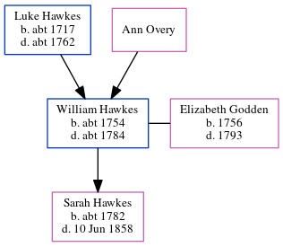

William Hawkes c1754 - c1784
[ Home ] | [ Calendar ] | [ Surnames Index ] | [ Errors ] | [ Family History ]The child of Luke Hawkes and Ann Overy, William Hawkes, the 5 times great-grandfather of Nigel Horne, was born in Ash, Kent, England c. 1754, was baptised there on 14 Apr 1754 and also married Elizabeth Godden (with whom he had 1 child, Sarah Anne) there on 16 Aug 17771.
He died c. 1784 in Ash1 and was buried there on 2 Jul 1784.
Parents
- Luke was born c. 1717
Children
- Sarah Anne was born c. 1782
Citations
- Kent, England, Tyler Index to Parish Registers, 1538-1874 Online publication - Provo, UT, USA: Ancestry.com Operations, Inc., 2010. This collection was indexed by Ancestry World Archives Project contributors.Original data - Frank Watt Tyler. The Tyler Collection. Canterbury, Kent, England: The Institute of Herald
Family Tree
Map
Generated by ged2site. Last updated on Jul 3, 2024
Known Issues
Birth date (abt 1754) has no citations
Burial date (2 Jul 1784) has no citations